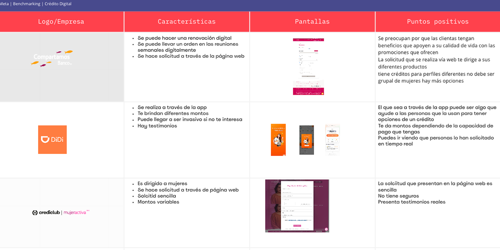
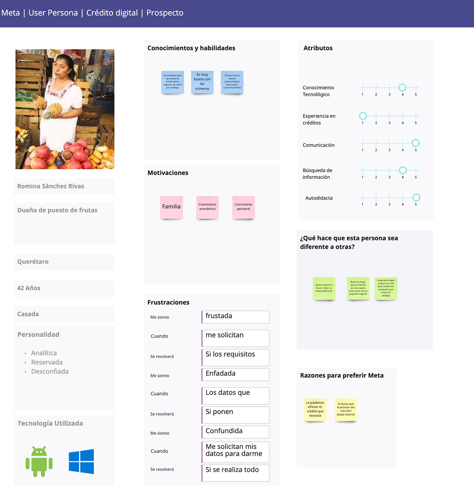
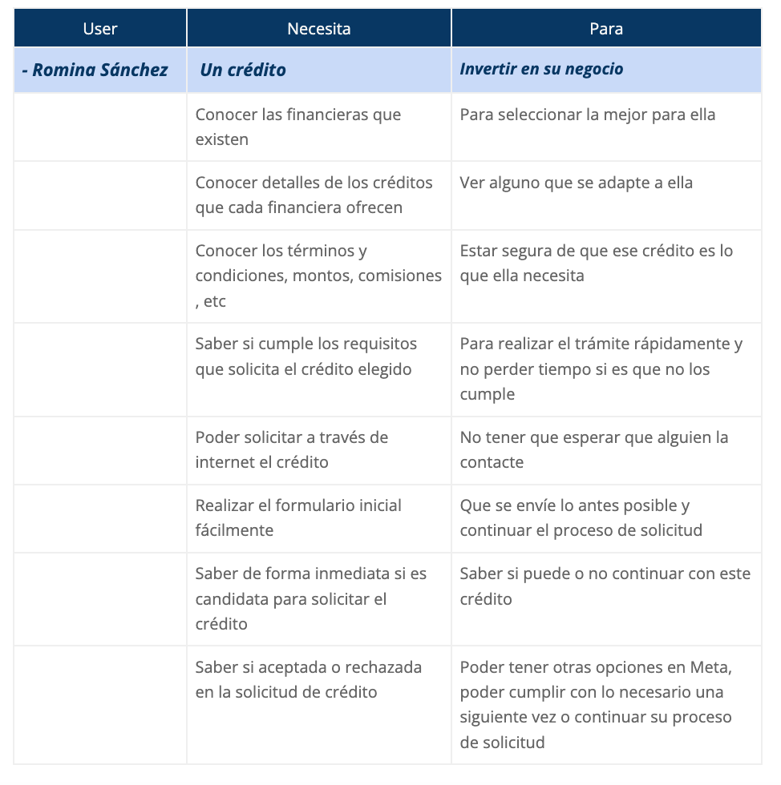
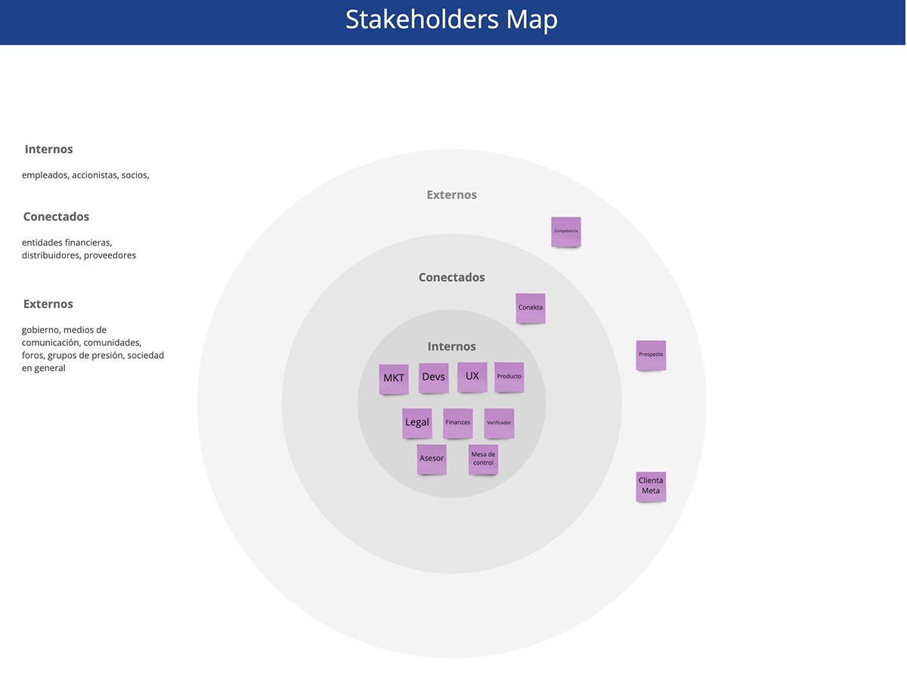
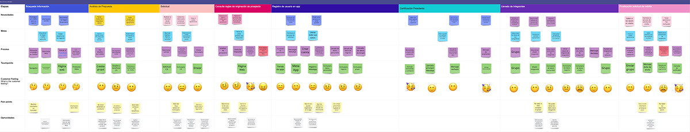
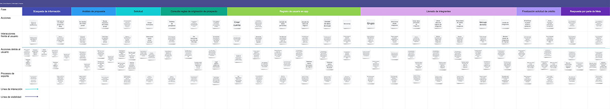
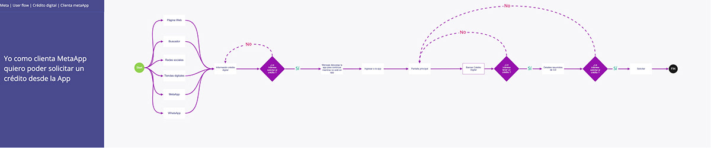
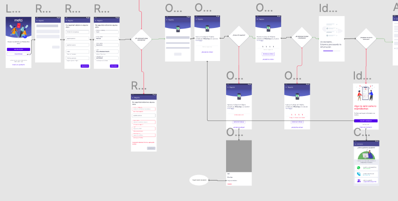

Digital Credit
Target
The aim is to improve the credit application process so that customers do not depend on an advisor to visit them at home and can make their application from the app, saving time and increasing digital recruitment.Benchmarking
A market study of the different financial institutions that offer similar loans to our target audience was carried out.
User persona
The person who will be the end user of the digital credit solution is created.
User needs
We list the needs that our person has, to know how we should work to make their experience easier and friendlier.
Stakeholder Map
With the above information already captured, we were able to create a journey map for each of the profiles, showing how they interact with the platform and marking how they felt and how we could improve in each of these points.
User journey
Once all the internal and external stakeholders have been located, we work with the user journey to see how the process will be from the search for the prospect on the web to the activation of the group in the company.
Service Blueprint
At the end of the user journey, the service blueprint was developed to see the relationship between the business and the end user.
User flows
The user flows for the digital credit application begin to be traced, marking the different means by which the prospect will arrive and by which he will interact with the areas involved.
Mockups
Supports the UI team with text and usability testing in the development of the functionality.
Field testing
Once the development is advanced we are going to field test the use and functionality with the advisors and managers, according to the impressions we have gathered, we can see that the credit and collection process is being facilitated with these functionalities. we can see that the credit and collection process is being facilitated with these functionalities.